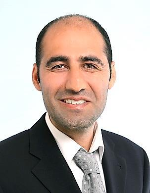

here is head
Name: Barin Kaya
Address: Strasse Bümplizstrasse 134
PLZ Ort: 3018 Bern
E-Mail: barinn.kaya@gmail.com
Geburtsdatum: 25. Januar 1984
Zivilstand: verheiratet
Nationalität: Kurde
Ausweis: B
GitHub link: GitHub
Mitarbeit in der Parkettverlegung, studienbegleitend
Dogan Parkett, Bern
Kioskverkäufer, studienbegleitend
Privatkiosk, Bern
Einreise in die Schweiz und Integration
Mathematiklehrer
Privatausbildungszentrum, Türkei
Vorbereitung und Aktualisierung des Lehrplans für die
9. bis 12. Gymnasialklassen
Beratungen für Gymnasiasten und ihre Familien
Überprüfung der Lernprozesse der Schüler
Mathematiklehrer
Privatausbildungszentrum, Türkei
Bachelorstudium Informatik, Berner Fachhochschule
Informatik-Basisstudium Universität Bern
Deutschkurs, Alemania, Bern (Niveau B2)
Mathematik-Studium, Universität Bern (Master, ohne Abschluss)
Deutschkurs, Universität Bern
Deutschkurs (privat), Basel
Mathematik-Studium, Abschluss: BSc, Türkei
Gymnasium mit Schwerpunkt Physik und Mathematik, Abschluss: Matura, Türkei
here is results